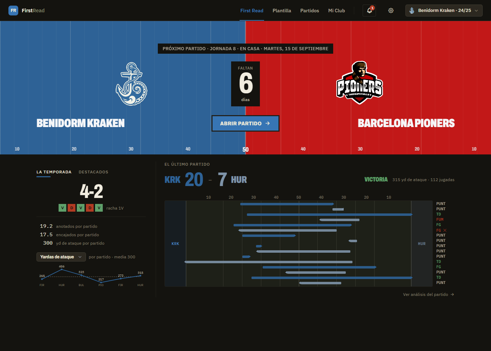
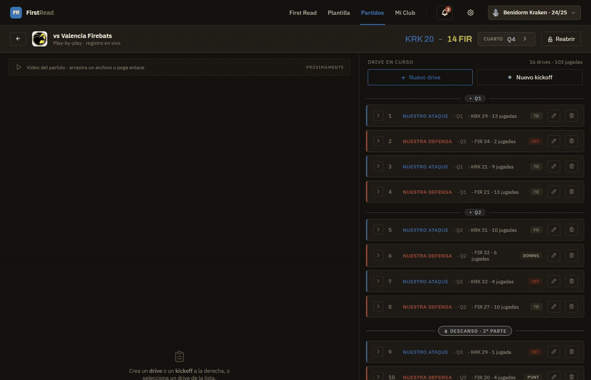
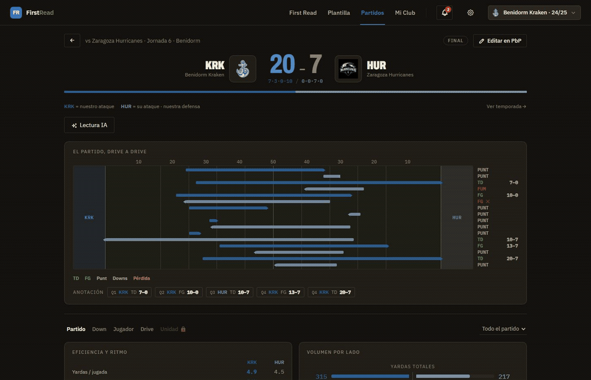
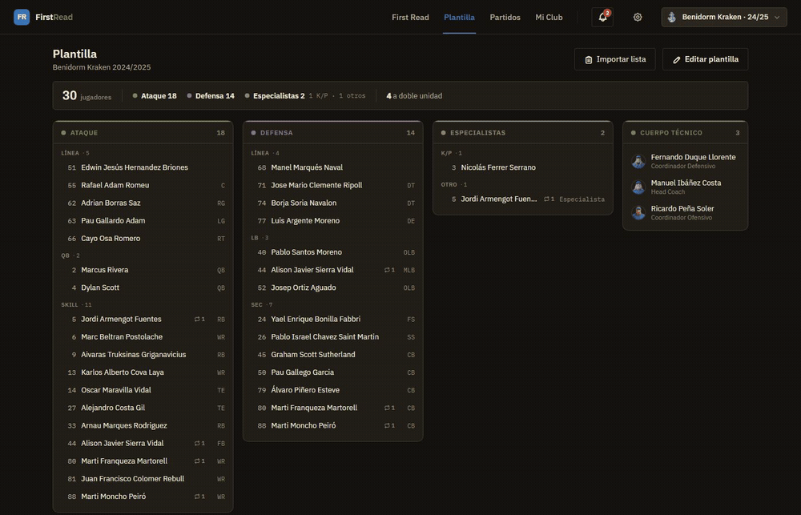

Fútbol americano · Liga española
Record the game play by play. Every statistic computes itself.

01 — Capture
A full game is 16 drives and 103 plays, each with its down, distance, field position, players and yardage — entered on a tablet while the game is running, by someone who is also coaching it.

02 — Payoff
The whole game, by down, by player, by drive. Yards per play, third-down conversion, red-zone efficiency, box scores. No number in this app was ever typed in by hand — every one of them is computed from the play log.

03 — Squad
Offence, defence, specialists, staff. Number and position belong to the season, not the person — so two-way players sit in both units, and last year's roster stays last year's.

04 — The club
Dues and payments per player: who has paid, who is partial, who is overdue, and how much of the season's budget is actually in the account.
| Player | Method | Expected | Paid | Status |
|---|---|---|---|---|
| #5 Armengot | Transfer | 180,00 € | 180,00 € | ● Up to date |
| #24 Bonilla | Transfer | 180,00 € | 90,00 € | ◐ Partial |
| #9 Truksinas | Bizum | 180,00 € | 0,00 € | ▲ 47 days overdue |
05 — Under it
There is no stats table, no cached totals, no score column — the scoreboard is summed from the points on each play. One engine feeds every screen, so two views can't disagree about the same game. Video is deliberately absent: it's Hudl's moat, and Hudl costs more than a lower-division club can pay.